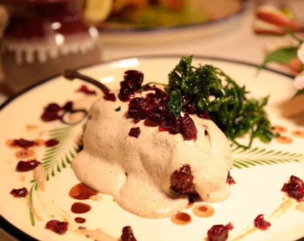

1.Aguascalientes

- Platillo: Chile Aguascalientes
- Ingredientes: Chiles anchos, carne de cerdo, jitomate, pasas, almendras, especias.
- Historia: Es una fusión entre el chile relleno y el picadillo, preparado desde la época colonial como una muestra del mestizaje gastronómico.
- Dato curioso: Su preparación es muy popular en celebraciones religiosas como fiestas patronales.